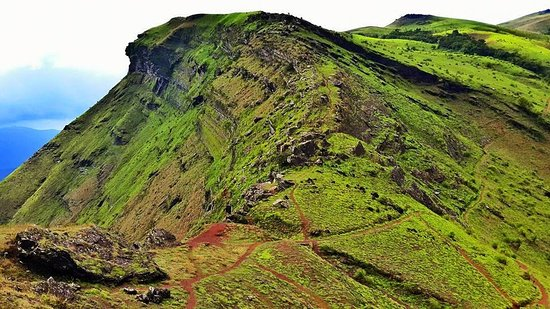
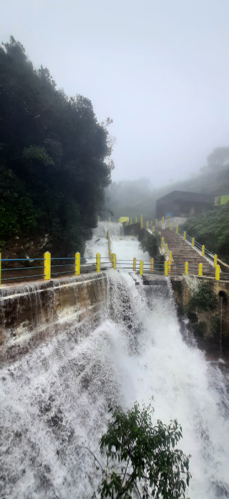
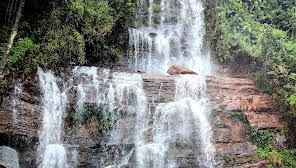
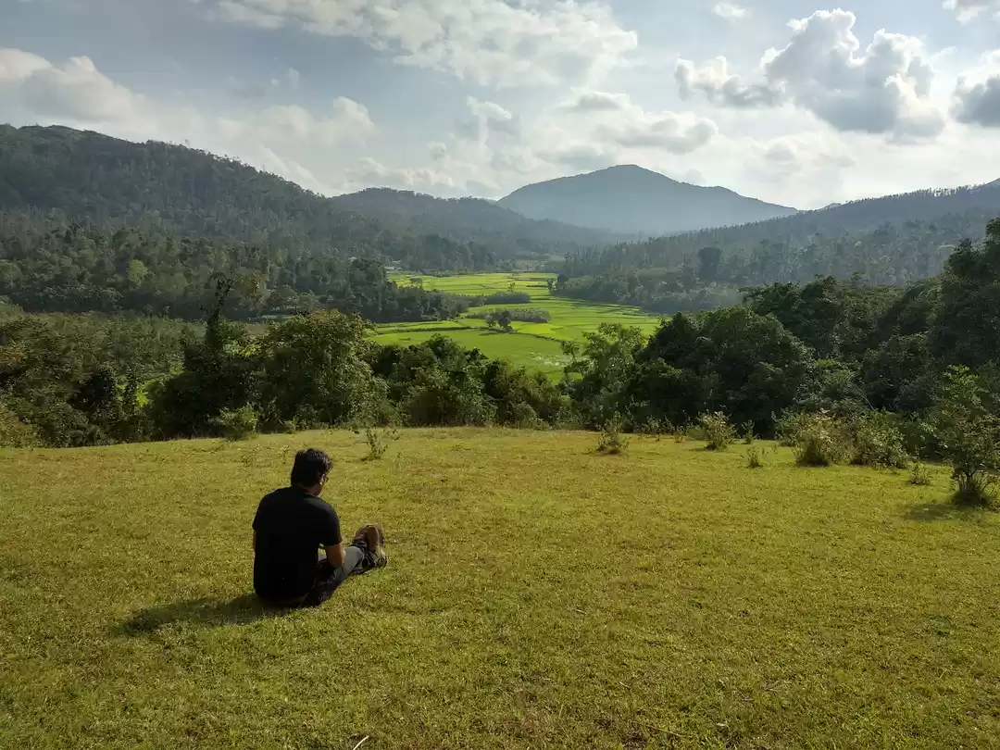
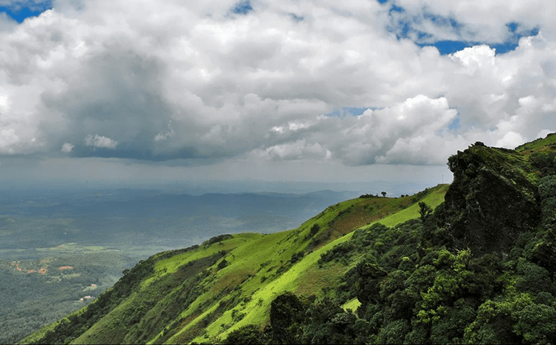

Best Seller
Best SellerChikkamagaluru Sightseeing
1 Day
A full day among the region’s signature peaks, waterfalls and viewpoints.
- Siri Cafe & Mullayanagiri
- Seethalayyana Giri & Kavikalgandi
- Honnamanahalla and Jhari Falls
- Datta Peeta & sunset viewpoints

Handcrafted itineraries for weekends, family holidays, honeymoons and long South India road trips.
Choose a day trip or stay longer for mountain viewpoints, coffee estates, waterfalls and Hoysala heritage.
Best Seller1 Day
A full day among the region’s signature peaks, waterfalls and viewpoints.
 Weekend
Weekend2 Days / 1 Night
A relaxed overnight escape pairing the classic mountain circuit with Kemmangundi’s waterfall country.
 Heritage
Heritage3 Days / 2 Nights
Balance misty hill drives and waterfalls with the celebrated Hoysala temples of Belur and Halebidu.
 Wildlife
Wildlife4 Days / 3 Nights
Take time for Chikkamagaluru’s quiet lakes, forest waterfalls and a Bhadra Tiger Reserve safari.
Signature5 Days / 4 Nights
Our most complete itinerary, bringing together sunrise peaks, waterfalls, Hoysala heritage, Bhadra safari and the sacred Sringeri–Kudremukh circuit.
Peaks, waterfalls, heritage temples, wildlife and pilgrimage — the definitive Chikkamagaluru experience. Tap each day to open the plan.
Siri Cafe: Begin your journey with a quick stop at this iconic landmark famous for its impressive, giant soil sculpture of a motherly figure built into the hillside landscape.
Mullayanagiri Peak: Experience the thrilling drive up to Karnataka’s highest peak. Take an off-road jeep ride to the top or walk the final steps to visit the ancient Mullayana Swamy and Shiva temple and enjoy sweeping cloud-bed views.
Seethalayyana Giri: Stop at this serene temple located en route dedicated to Mullayanagiri,Seethala Mallikarjuna and Veerabhadreshwara Temple surrounded by cool mountain breezes.
Kavikalgandi Viewpoint: A natural rocky gap between two mountain peaks offering breathtaking, windy views of the Western Ghats valleys.
Zip Line Adventure: Get an adrenaline rush soaring over lush tea and coffee estates on a high-flying zip line track.
Honnamanahalla Falls: A picturesque roadside waterfall amidst thick forest foliage, ideal for photos and a refreshing break.
Jari Falls (Buttermilk Falls): Board an off-road 4x4 jeep down steep plantation tracks to reach this cascading waterfall, named for its frothy buttermilk-like appearance.
Shooting Spot Viewpoint: A popular movie shooting location featuring open grassy slopes and uninterrupted vistas of the green hills.
Datta Peeta (Bababudangiri): Visit the historic shrine on the Bababudangiri range, held sacred by both Hindu and Sufi traditions.
Datta Peeta Viewpoint (Z-Point): Conclude your day taking in dramatic panoramic sunset vistas over the ridge lines.
Deviramma Temple: Start early at this historic temple located at the foot of Deviramma Hill, deeply revered across the Malnad region.
Kalhattagiri Falls (Kalthigiri): Visit a unique waterfall where mountain water cascades over a rocky cliff right onto the roof of the ancient, cave-carved Veerabhadra Temple.
Hebbe Falls: Journey deep into dense reserve forests aboard an adventurous 4x4 jeep to reach this stunning two-tiered waterfall surrounded by natural streams.
Kemmangundi Rose Garden: Stroll through beautifully maintained botanical gardens filled with colorful rose species and ornamental flora.
Rock Garden: Explore terraced stone pathways and flowerbeds built along the hilltop edge.
Z-Point & Shanti Falls Trek: 3km Take a scenic nature trail passing the gentle Shanti Falls to reach the cliff-edge at Z-Point for panoramic views of the surrounding valleys.
Sri Veeranarayana Swami Temple, Belavadi: Marvel at the grand 13th-century Hoysala temple featuring three shrines (Trikuta) and polished soapstone pillars.
Hoysaleshwara Temple, Halebedu: Explore a UNESCO World Heritage site renowned worldwide for its exterior walls covered in stone carvings of mythology, wildlife, and royal processions.
Shri Kedareshwar Temple, Halebedu: A serene Hoysala masterpiece nearby, built on a star-shaped base platform with detailed stone relief work.
Bhagwan Shantinatha Jain Temple: Visit the ancient Jain basadi in Halebedu, featuring polished black stone pillars and a monolithic idol of Lord Shantinatha.
Shri Chennakeshwara Temple, Belur: Experience the pinnacle of Hoysala architecture on the banks of the Yagachi River, famous for its detailed bracket figurines (Madanikas).
Yagachi Dam: Enjoy views of the expansive water reservoir created across the Yagachi River.
Yagachi Backwater Boating & Adventure Sports: Unwind with exciting water activities including speed boating, jet-skiing, banana rides, and kayaking.
Hirekolale Lake: Start your morning beside a tranquil, man-made lake with reflections of the Mullayanagiri peak in the water.
Bandekallu Gudda: Visit a massive single-rock vantage point offering elevated views across dense coffee forests and surrounding hilltops.
Bhadra Tiger Reserve (Muthodi Safari): Take an open forest jeep safari through the tiger reserve to spot wild elephants, gaurs, spotted deer, peacocks, and exotic birds
Ukkada Falls
: A hidden waterfall tucked away inside thick forest cover, known for its untouched natural surroundings.
Mallandur Shooting Point
: Wrap up the evening at this high grassy meadow overlooking endless green valleys during sunset.
Rambhapuri Mata, Balehonnur: Visit one of the primary historic seats of the Veerashaiva faith, located on the banks of the Bhadra River.
Sringeri Sharada Peetham & Shankaracharya Mutta
: Explore the holy temple town founded by Adi Shankaracharya in the 8th century, featuring the Sri Sharadamba Temple and the stone Vidyashankara Temple beside the Tunga River.
Kudremukh View
: Enjoy scenic views of the horse-face shaped Kudremukh mountain ranges during your drive through the Western Ghats.
Tea Plantation Views
: Drive through manicured, bright green tea estates stretching across the rolling hills of the region.
Kalaseshwara Temple, Kalasa: Pay respects at this ancient Shiva temple situated on a hillock overlooking the holy town of Kalasa.
Horanadu Annapoorneshwari Temple
: End your journey at the sacred temple of Goddess Annapoorneshwari, set deep within a verdant valley, where all visiting devotees receive traditional meals and blessings.









Common questions about our Chikkamagaluru itineraries and pricing.
Call us for same-day availability, customised itineraries and honest pricing. No hidden charges, ever.